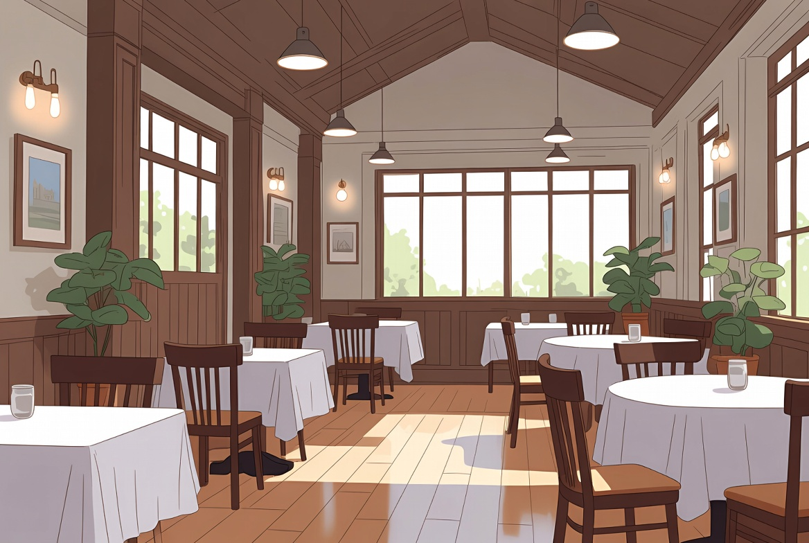

Alemão A1 · Aula 12 de 30 · GrátisNo restaurante
Nesta aula você vai aprender a pedir comida, solicitar a conta e pagar.
 Lektion 12
Lektion 1201 · Primeiro, escuteDiálogo em contexto
Ouça a conversa completa e acompanhe a tradução em português.

Anna e LukasSind Sie bereit zu bestellen?Está pronto para pedir?
02 · Frases essenciaisEscute e repita
Aprenda cada expressão como um bloco completo.
01Sind Sie bereit zu bestellen?
Está pronto para pedir?
02Ja. Ich nehme die Suppe und das Hähnchen.
Sim. Vou querer a sopa e o frango.
03Möchten Sie etwas trinken?
Deseja algo para beber?
04Ein Mineralwasser, bitte.
Uma água mineral, por favor.
05Kommt sofort.
Já vem.
06Danke.
Obrigado.
07Ich nehme die Suppe:
Ich nehme die Suppe: o verbo nehmen, pegar ou tomar, é o mais usado para escolher um prato, algo como 'eu vou de sopa'.
08die Suppe,
Ich nehme die Suppe: o verbo nehmen, pegar ou tomar, é o mais usado para escolher um prato, algo como 'eu vou de sopa'.
03 · Entenda a lógicaExplicação em português
O alemão fica visível; a explicação ajuda você a entender como usar.
Explicação 1nehmen
pegar ou tomar, é o mais usado para escolher um prato, algo como 'eu vou de sopa'.
Explicação 2Rechnung
significa conta ou fatura. Guarde as duas frases de fim de refeição juntas:
Explicação 3Zahlen
é o verbo pagar, dito aqui no infinitivo como fórmula rápida. Cuidado para não confundir
Explicação 4Noch ein Dialog
Agora o fim da refeição: o garçom pergunta se você gostou e você pede a conta.
04 · FixaçãoTeste o que aprendeu
Escolha a tradução correta e confira na hora.